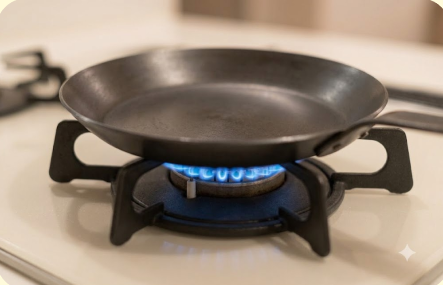
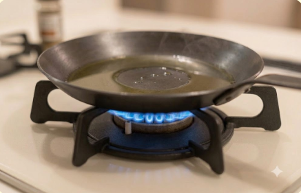
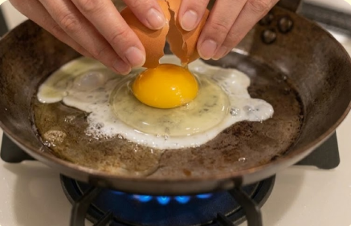
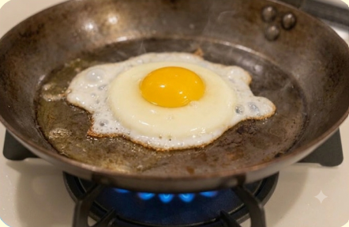
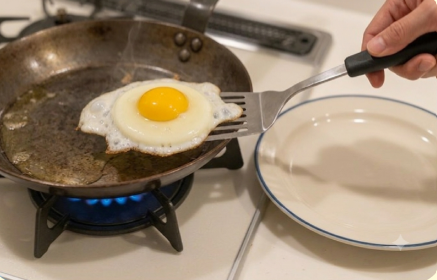
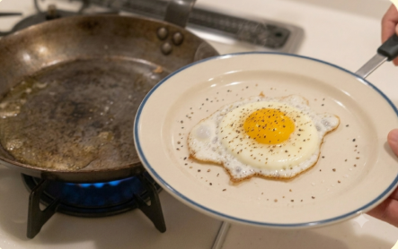

難易度２ ★★☆
材料（一人分）
- ・卵１個
- ・サラダ油小さじ１
- ・しょうゆ・塩など適量
必要な道具
- ・フライパン
- ・フライ返し（あれば）
- ・お皿
注目ポイント
- 🔪 包丁を使わない
- 🔥 火加減に注意
作り方
① コンロを弱火〜中火にして、フライパンを30〜60秒温めます。

② サラダ油を入れ、フライパン全体に広げます。 油が少ないと卵がくっつきやすくなります。

③ 卵を平らな場所で軽く割り、殻を開いてフライパンへそっと入れます。

④ 弱火で2〜4分焼きます。 半熟なら黄身が少し揺れるくらい、固めなら黄身までしっかり火を通します。

⑤ フライ返しや菜箸を使って崩さないようにお皿へ移します。

⑥ お好みで塩・しょうゆ・ケチャップなどをかけて完成です。

調理のコツ
弱火でゆっくり焼くと失敗しにくいです。
フライ返しは卵の下にしっかり入れてから持ち上げると崩れにくくなります。
困ったときは
Q. 卵がくっつく…
A. フライパンが十分温まってから油を入れましょう。
Q. 白身だけ焦げる…
A. 火が強すぎます。弱火でゆっくり焼きましょう。
Q. 焼けたかわからない…
A. 白身が透明でなくなればOKです。